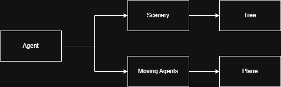
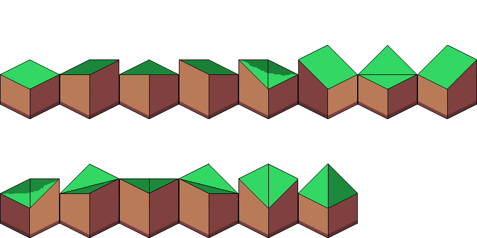

RTS Engine
Creating a lightweight RTS engine
- Team of 3
- C++ · SFML
- Windows
For this project, I volunteered, collaborating with a team of 6 developers using C++ and SFML to build an RTS game engine. I was responsible for the agents and rendering systems, working closely with the engine core to optimise and implement new features.
GitHub
As this was my first group project, it was also my first time using Git's collaboration features. Our team used GitHub to host the repository, with each contributor working in a separate branch.
I spent the first few weeks learning Git in-depth—getting familiar with key commands, resolving merge conflicts, and organizing branch structures for team efficiency.
Agents
.png)
My first major task was developing the agent system. The system consisted of two main parts: the agents themselves and an Agent Manager. While the implementation evolved over time, the core idea—using inheritance to represent all world entities—remained constant.
Every object in the world (trees, planes, future structures) was treated as an agent. Some could move, others were static, and each required unique behavior. To support this variety, I implemented an inheritance-based class hierarchy.

Agents were stored in a quadtree structure developed by another programmer, which allowed for efficient spatial queries during rendering and updates.
void AgentManager::PlaceMobileAgent(sf::Vector2i cell, std::set<std::vector<BattlefieldCell>::iterator>* gameScene, MobileAgent, agent, GameStateManager& gamestateManager)
{
MobileAgent* newAgent = new MobileAgent(agent);
gamestateManager.getState().Units.push_back(newAgent);
gamestateManager.getState().Quadtree->Insert(newAgent, constants.CELL_SIZE);
mobileAgent.push_back(newAgent);
}
Isometric Terrain

I was also responsible for the isometric terrain system. While utility functions already existed to convert between world and screen space, we needed a system to associate terrain tiles in the quadtree with their texture data.
We used a combination of JSON files and a Python tool to procedurally generate maps. These files included both terrain height and type arrays.
Loading the height map:
void BattlefieldMap::initDepthMap()
{
depthMap = new int* [size];
for (int i = 0; i < size; i++)
{
depthMap[i] = new int[size];
for (int j = 0; j < size; j++)
{
depthMap[i][j] = imin(mapData["MapData"]["HeightMap"][i][j], GlobalConstants::maxMapHeight);
}
}
}
For terrain types, I used a hash map that linked terrain keys in the JSON to corresponding spritesheets, allowing flexible and extensible terrain rendering.
void BattlefieldMap::initTerrainMap() {
terrainMap = new TerrainInstance * [size];
for (int i = 0; i < size; ++i) {
terrainMap[i] = new TerrainInstance[size];
for (int j = 0; j < size; ++j) {
std::string terrainKey = mapData["MapData"]["TerrainMap"][i][j];
std::string thisTerrainTypeName;
if (mapData["MapData"]["RequiredTerrainTypes"].contains(terrainKey)) {
thisTerrainTypeName = mapData["MapData"]["RequiredTerrainTypes"][terrainKey];
}
else {
std::cerr << "Unknown terrain type key: " << terrainKey << std::endl;
continue;
}
bool found = false;
for (const auto& terrainType : terrainTypes) {
if (terrainType.name == thisTerrainTypeName) {
terrainMap[i][j] = TerrainInstance(terrainType);
found = true;
break;
}
}
if (!found) {
std::cerr << "Unknown terrain type name: " << thisTerrainTypeName << std::endl;
}
}
}
for (int y = 0; y < size; ++y) {
for (int x = 0; x < size; ++x) {
terrainMap[y][x].setSpriteIndex(directionMap[y][x]);
}
}
SpriteManager::GetInstance()->SetRequiredTerrainSpriteSheetList(terrainMap, size);
}
To determine which tile to use from the spritesheet, I evaluated the height of neighboring tiles to pick the correct directional variant. Most of this logic is implemented through conditional statements.
void BattlefieldMap::initDirectionMap()
{
directionMap = new Direction*[size];
for (int i = 0; i < size; i++)
{
directionMap[i] = new Direction[size];
for (int j = 0; j < size; j++)
{
/////////////////////////////
// Peak Mountain Checks
/////////////////////////////
if ((i > 0 && i < size - 1 && j > 0 && j < size - 1) && (depthMap[i - 1][j] < depthMap[i][j] && depthMap[i][j - 1] < depthMap[i][j] && depthMap[i + 1][j] < depthMap[i][j] && depthMap[i][j + 1] < depthMap[i][j]))
directionMap[i][j] = P;
else if ((i == 0 && j == 0) && (depthMap[i + 1][j] < depthMap[i][j] && depthMap[i][j + 1] < depthMap[i][j]))
directionMap[i][j] = P;
//...
/////////////////////////////
// Inward angle checks
/////////////////////////////
else if (i > 0 && j < size - 1 && (depthMap[i - 1][j] > depthMap[i][j] && depthMap[i][j + 1] > depthMap[i][j]))
directionMap[i][j] = NIW;
else if (i < size - 1 && j < size - 1 &&
(depthMap[i + 1][j] > depthMap[i][j] && depthMap[i][j + 1] > depthMap[i][j]))
directionMap[i][j] = NIE;
//...
}
}
}
If I were to rebuild the terrain system, I would likely switch to an orthographic 3D approach using a mesh generated from heightmaps, with texture blending for smoother terrain transitions.
Boids
As shown in the video, multiple planes follow a lead plane using a combination of A* pathfinding and boids behavior. While another programmer worked on pathfinding, I implemented the boids behavior.
class MobileAgent : public Agent
{
public:
MobileAgent(...) : Agent(...)
{
lastCellPosition = sf::Vector2i(initialPosX, initialPosY);
isMobileAgent = true;
}
void update(GameStateManager* gameStateManager);
private:
std::vector<Agent*> nearbyAgents;
sf::Vector2f velocity;
PathfinderAgent* pathfinderAgent = nullptr;
void Coherence();
void seperation();
void Alignment();
//... Other members
};
The boids were implemented as specialized agents with AI logic. They followed a PathfinderAgent using simple separation, alignment, and cohesion rules.
Unfortunately, we ran out of development time before adding formation logic. If I continue working on the project, I'd expand the system to support formations—common in RTS games—where boids organize into predefined layouts during movement.